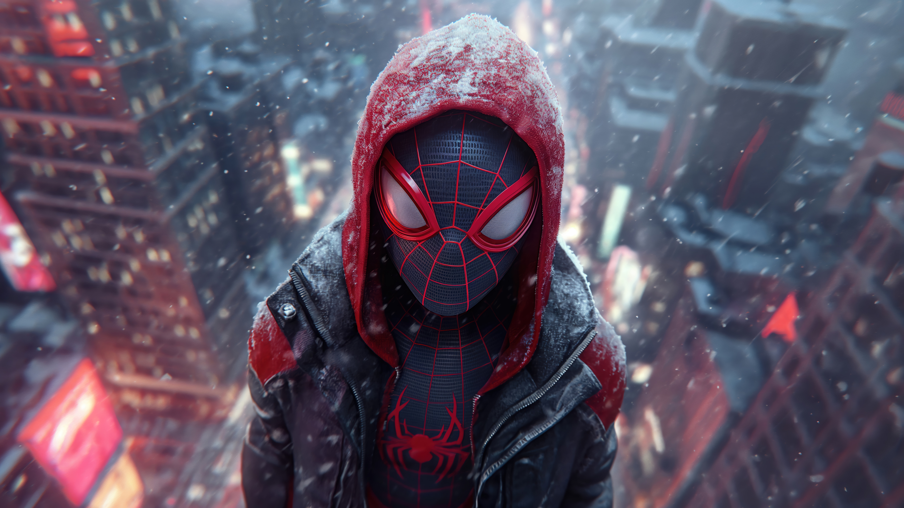

The Birth of a Legend
The Marvel Universe began in 1939 as Timely Publications, later evolving into the powerhouse known today as Marvel Comics. The creative genius of legends like Stan Lee, Jack Kirby, and Steve Ditko gave birth to superheroes who weren’t just strong—they were relatable, flawed, and human.

Iconic Characters That Defined Generations
From the billionaire genius Iron Man (Tony Stark) to the patriotic super-soldier Captain America (Steve Rogers), Marvel’s heroes are as diverse as they are powerful. We’ve witnessed the struggles of Spider-Man, the might of Thor, and the fierce courage of Black Panther.
"With great power comes great responsibility." — Spider-Man
The Marvel Cinematic Universe (MCU)
In 2008, Marvel launched the MCU with Iron Man, leading to an interconnected saga spanning over 30 films, culminating in the epic battle of Avengers: Endgame. The MCU redefined cinema, blending action, emotion, and storytelling like never before.
Beyond the Screen
Marvel isn’t just movies and comics. It’s a cultural phenomenon that’s inspired generations to believe in heroes. Whether it's the multiverse madness of Doctor Strange or the cosmic adventures of the Guardians of the Galaxy, Marvel’s legacy is infinite.
← Back to Home